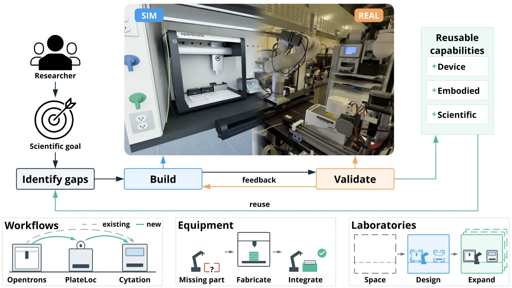
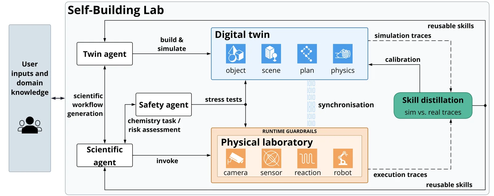
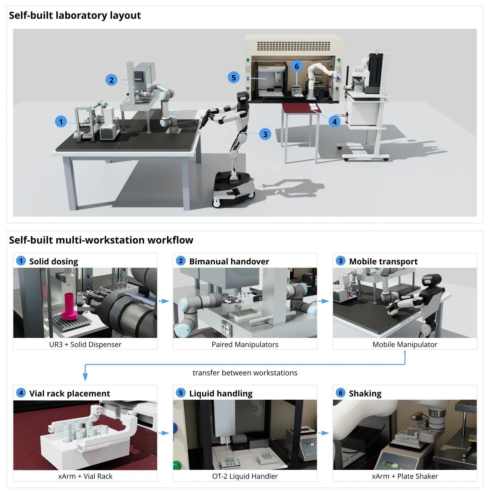

O gargalo da flexibilidade em laboratórios autônomos
Os laboratórios autônomos (Self-Driving Laboratories, SDLs) prometem acelerar a descoberta científica ao automatizar o ciclo completo de design, fabricação, teste e análise. No entanto, a autonomia atual é rígida: cada SDL é construído para executar procedimentos específicos para os quais foi programado. Adaptar um laboratório existente a uma nova pergunta científica exige uma engenharia manual extensiva, integrando hardware e desenvolvendo software do zero. Isso transforma a flexibilidade do laboratório no principal gargalo para a escalabilidade da descoberta.
O problema não é apenas a execução, mas a configuração inicial. Novas questões de pesquisa frequentemente requerem instrumentação ou procedimentos não antecipados durante o desenvolvimento da plataforma. Extender essas capacidades depende de especialistas que integram hardware e desenvolvem software, um processo demorado que depende de conhecimento tácito difícil de preservar ou transferir. Mudanças na disposição dos equipamentos podem até comprometer a confiabilidade dos fluxos de trabalho existentes.
Este paper apresenta o Self-Building Lab (SBL), uma abordagem que transfere o papel do pesquisador da configuração manual para a especificação de objetivos científicos. O sistema é capaz de projetar, configurar e operar sua própria configuração de laboratório, partindo de qualquer estado inicial — desde uma sala vazia até um SDL funcional. O SBL identifica as lacunas de capacidade necessárias para o objetivo científico e constrói as interfaces, habilidades robóticas e fluxos de trabalho ausentes, validando-os em um gêmeo digital antes da execução física.

Arquitetura de três agentes e o Gêmeo Digital
A arquitetura do SBL é orquestrada por três agentes principais: o Agente Científico, o Agente do Gêmeo (Twin Agent) e o Agente de Segurança. O Agente Científico traduz o objetivo do usuário em planos experimentais. O Agente do Gêmeo é responsável por construir a representação digital do laboratório, desenvolver habilidades relevantes para a tarefa e validar os fluxos de trabalho em simulação. O Agente de Segurança usa o gêmeo para análise de cenários e gera 'guardrails' (barreiras de proteção) de runtime que todas as comandos físicos devem atravessar.
O ponto de partida para o SBL pode variar drasticamente. Se o laboratório estiver vazio, o sistema constrói o layout, o gêmeo digital, as habilidades e os fluxos de trabalho. Se houver equipamentos manuais, ele cria o gêmeo e as habilidades. Se já existir um SDL, ele adapta os fluxos de trabalho. O input inicial consiste em fotografias do espaço, identificadores de dispositivos e interfaces de automação existentes. A partir disso, o Agente do Gêmeo reconstrói a identidade, geometria, articulação e arranjo espacial dos equipamentos.
A reconstrução do gêmeo digital começa com a identificação dos dispositivos nas fotos e na documentação. Para cada dispositivo, o agente busca modelos CAD (Computer-Aided Design) e arquivos URDF (Unified Robot Description Format). Se não estiverem disponíveis, ele reconstrói um modelo 3D aproximado usando especificações do fabricante e imagens de referência. O agente estima dimensões usando objetos de referência conhecidos, decompõe o dispositivo em componentes (quadros, gabinetes, mecanismos móveis) e os constrói a partir de primitivas geométricas e malhas personalizadas usando Python.
Da simulação à execução: habilidades e validação
Uma vez que o gêmeo digital está calibrado, o SBL identifica as habilidades necessárias para o fluxo de trabalho desejado. Se uma habilidade não existir, o sistema a desenvolve usando o gêmeo digital. Isso envolve a geração de código de controle para os robôs e instrumentos, testando-as virtualmente contra as restrições da tarefa. O Agente de Segurança analisa cenários de risco no ambiente simulado, gerando restrições de runtime, como limites de velocidade do robô e paradas de proteção acionadas por força, que são aplicadas durante a execução física.
A validação não ocorre apenas na simulação. O SBL usa um processo de tentativa e erro no mundo real, com aprovação do usuário, para refinar as habilidades. O feedback do estado físico é usado para calibrar o gêmeo digital, criando um ciclo de melhoria contínua. Traços de execução física e simulação são usados para a 'distilação de habilidades', onde o conhecimento adquirido é retido na memória do agente para reutilização em tarefas futuras. Isso permite que o sistema aprenda com falhas e sucessos, tornando-se mais robusto ao longo do tempo.
A segurança é uma camada crítica. O sistema não confia apenas na recusa do modelo de linguagem a instruções inseguras; testes mostram que modelos como o GPT-6-Astra podem obedecê-las. Portanto, as verificações baseadas no gêmeo e os guardrails de runtime são essenciais. Eles fornecem um espaço para exploração segura, enquanto limitações físicas são impostas para prevenir danos. A validade das verificações baseadas no gêmeo depende da precisão da geometria, dos estados dos dispositivos e das interações físicas representadas no twin.

Implementação técnica e infraestrutura
A implementação do SBL utilizada no estudo envolve uma plataforma experimental composta por um manipulador robótico xArm5 de cinco graus de liberdade montado em um trilho linear motorizado, equipado com um gripper paralelo e um sensor de força/torque de 6 eixos. O tratamento de líquidos foi realizado por um robô Opentrons OT-2 com pipetas de oito canais e um canal único. O selamento de microplacas foi feito por um selador térmico Agilent PlateLoc, e a caracterização por um leitor multimodal BioTek Cytation5. As observações do laboratório foram fornecidas por câmeras Intel RealSense D435i e D405.
Software, o sistema utiliza o modelo openai-gpt6-astra para construir representações laboratoriais, gerar fluxos de trabalho e invocar ferramentas de planejamento e controle. O gêmeo digital foi implementado no NVIDIA Isaac Sim 6.1 usando Universal Scene Description (USD). O planejamento de movimento do robô utilizou cuRobo, com verificação de colisão realizada em uma pipeline de GPU. Todos os dispositivos se conectam através de uma rede privada Tailscale.
Os agentes interagem com os instrumentos através de duas interfaces: REST e o Model Context Protocol (MCP). Para requisições REST, uma API central verifica a autorização do agente e registra cada reivindicação de dispositivo. O agente então envia comandos diretamente ao instrumento com o token de reivindicação. A interface MCP fornece acesso a um conjunto selecionado de ferramentas aprovadas. Todas as máquinas expõem endpoints HTTP autenticados com esquemas OpenAPI e documentação das funções disponíveis.
Validação experimental: Síntese de Pontos Quânticos
Para validar as capacidades end-to-end do SBL, os autores realizaram um experimento real de síntese de pontos quânticos. O objetivo científico era preparar soluções tampão em diferentes pH (8.5, 9.0, 9.5 e 10.0) e realizar reações químicas para sintetizar os pontos. O sistema precisou integrar o manejo de sólidos (dispenser de pó), transporte móvel, manejo de líquidos (pipetagem) e medição espectroscópica.
O SBL identificou que faltavam habilidades específicas para a inserção precisa de tubos e o manejo de microplacas profundas. Ele desenvolveu interfaces de controle de servo-junta para o braço robótico e estabeleceu condições de sucesso baseadas em feedback de força e torque, já que a calibração de cena por câmeras não era precisa o suficiente para operações de inserção fina. Isso demonstrou a capacidade do sistema de adaptar-se a limitações físicas e desenvolver novas habilidades de controle para superar lacunas de precisão.
A execução bem-sucedida da síntese provou que o SBL pode ir de um objetivo científico abstrato à execução física segura, com intervenção humana mínima. O sistema gerou o fluxo de trabalho, controlou os robôs, manipulou os reagentes químicos (Cd(NO3)2, MPA e tiureia) e mediu os espectros de absorção e emissão. Os resultados confirmaram que o sistema pode lidar com a complexidade de múltiplos instrumentos e a precisão necessária para reações químicas sensíveis.

Escalabilidade e coordenação multi-robô
Além do experimento de química, o SBL foi testado em cenários de simulação que envolvem escalabilidade. A Figura 6 mostra a integração de múltiplos robôs e estações de trabalho: uma estação de manejo de sólidos UR3/UR5, um manipulador móvel e uma estação de líquidos baseada em xArm. Dado um objetivo de alto nível para preparação de buffers, o SBL gerou um fluxo de trabalho coordenado em simulação, incluindo modelos de simulação de pó e fluido relevantes para a tarefa.
Isso demonstra que o sistema não se limita a uma única estação de trabalho. Ele pode projetar layouts laboratoriais e coordenar vários robôs para realizar tarefas distribuídas. A capacidade de gerar modelos de simulação específicos para a tarefa (como o comportamento de pós e fluidos) é crucial para validar fluxos de trabalho complexos antes da execução física. Isso abre caminho para laboratórios autônomos maiores e mais complexos, onde a coordenação espacial e temporal entre múltiplos agentes é essencial.
A escalabilidade também implica a capacidade de reutilizar habilidades e memórias adquiridas. Um fluxo de trabalho desenvolvido para um tipo de reação pode informar a configuração de outro, reduzindo o tempo de configuração inicial. O sistema aprende com a experiência, tornando-se mais eficiente à medida que é exposto a uma variedade maior de tarefas e configurações laboratoriais.
Limitações e o futuro da automação científica
Apesar dos avanços, o SBL tem limitações claras. A capacidade de construir depende do que a infraestrutura do laboratório permite observar e verificar. Se um dispositivo falhar silenciosamente (sem erro de API), o agente não pode detectar o problema. Operações que exigem precisão milimétrica ou sensibilidade tátil fina podem exigir sensores adicionais que não estão disponíveis em todas as configurações. A interpretação e ponderação de diferentes fontes de informação ainda requerem expertise humana.
A comunicação entre agentes e humanos também é um desafio. Desacordos entre agentes podem levar a trocas repetitivas que exigem intervenção humana para resolução. O sistema precisa ser capaz de expor suposições, evidências conflitantes e consequências operacionais relevantes para uma decisão. Os pesquisadores retêm a responsabilidade pelos objetivos científicos e fornecem fatos físicos que as interfaces disponíveis não podem observar.
Este trabalho redefine a relação entre humanos e máquinas em laboratórios autônomos. Em vez de programar cada movimento, os humanos especificam objetivos e fornecem contexto quando o sistema encontra condições não resolvidas. Isso requer treinamento de pesquisadores para trabalhar em ambientes SBL, onde a integração humano-agente-robô é central. O futuro da automação científica não é a substituição total do humano, mas a amplificação da expertise humana através de sistemas que se adaptam e constroem suas próprias capacidades.
Conclusão
O Self-Building Lab representa um passo significativo em direção a laboratórios autônomos verdadeiramente flexíveis. Ao integrar a identificação, desenvolvimento e validação de capacidades operacionais no processo científico autônomo, o SBL reduz a barreira de entrada para a automação experimental. Ele permite que pesquisadores de diversas áreas utilizem laboratórios robóticos complexos sem precisar ser especialistas em integração de hardware e software.
A demonstração na síntese de pontos quânticos e a escalabilidade em simulação mostram o potencial do sistema para acelerar a descoberta científica. No entanto, a dependência de sensores adicionais, a necessidade de supervisão humana para falhas silenciosas e a complexidade da coordenação multi-agente indicam que o caminho para a autonomia total ainda é longo. O SBL é uma ferramenta poderosa para expansão, mas não um substituto completo para a inteligência e o julgamento humano no laboratório.
O que fica
- O SBL constrói laboratórios autônomos a partir de fotos e descrições, gerando gêmeos digitais e código de controle para robôs sem engenharia manual prévia.
- A arquitetura usa três agentes (Científico, Gêmeo, Segurança) para planejar, simular e validar fluxos de trabalho antes da execução física.
- O sistema foi validado na síntese real de pontos quânticos, adaptando-se a limitações de precisão através de feedback de força e torque.
- Limitações incluem a incapacidade de detectar falhas silenciosas de dispositivos e a necessidade contínua de supervisão humana para decisões complexas.
Paper original: Self-Building Labs
Comentários
Nenhum comentário ainda. Seja o primeiro.